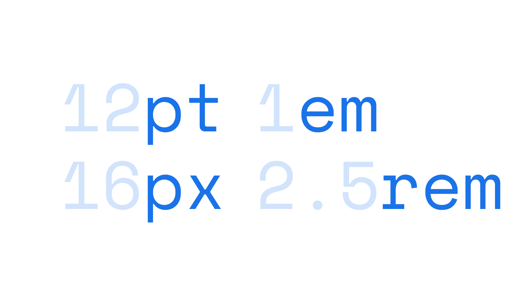

Unit
By Google Fonts Knowledge contributors · Google Fonts Knowledge.
Original article · Source on GitHub · CC BY-SA 4.0. Text, illustrations and existing credits reproduced from the licensed Knowledge repository. Open Shelf adapted the layout and links; these adaptations are also CC BY-SA 4.0. No endorsement implied.
A unit is a way of measuring font size, line height, line length, margins, or virtually anything in the practice of typography. Multiple units are in existence, including many historic ones, but points, pixels, and ems (or rems) are the units most relevant to today’s digital typesetting needs. Units mark the key integers in a typographic scale.

Some units are absolute—they will always appear at exactly the same size (points, picas, inches, centimeters)—and some units are relative—their final size is dependent on their relation to other properties (percentages, ems, rems, viewport height, viewport maximum size, etc.).
In print, it usually makes the most sense to focus on absolute units. On the web and in apps, it usually makes the most sense to focus on relative units. It could be argued that pixel is both an absolute and relative unit, because although it takes no cues from other elements (in the way that rems or percentages might), the exact physical size of a pixel varies between computing devices.